Nutricionista Esportiva · Atleta · +5.000 vidas transformadas
Emagreça, defina
e conquiste seu
melhor corpo.
Protocolo científico e individualizado, sem dietas restritivas, sem sofrimento. Resultado real para qualquer objetivo — do emagrecimento ao ganho de massa.
Quero transformar meu corpo
Vivo o que prescrevo — e os resultados provam.
Sou Nutricionista Esportiva e Atleta de Fisiculturismo — o que significa que não apenas oriento: vivo na pele cada protocolo que prescrevo. Com mais de 5.000 vidas transformadas, combino rigor científico com uma abordagem humana e sem radicalismos.
Independente do seu objetivo — emagrecer, ganhar massa muscular ou melhorar a saúde do intestino — desenvolvo um protocolo exclusivo para você, respeitando sua rotina, suas preferências e o seu corpo. Sem dietas restritivas que te fazem desistir na primeira semana.
Formação & Especialidades
- Nutricionista Esportiva — CRN · Especialista
- Especialista em Emagrecimento e Definição Corporal
- Especialista em Ganho de Massa Muscular
- Especialista em Modulação Intestinal
- Atleta de Fisiculturismo
"Dieta restritiva não é protocolo. É desistência programada."
Cortar tudo, passar fome e sofrer pode até funcionar no curto prazo — mas o corpo encontra um jeito de voltar. A diferença está na ciência: meu protocolo respeita o seu metabolismo, o seu estilo de vida e entrega resultado que fica.
Ciência, não achismo
Cada protocolo que desenvolvo é baseado em evidências científicas atualizadas. Nada de moda, nada de dieta da internet. O que funciona para o seu metabolismo e o seu objetivo.
Individual como você
Não trabalho com protocolos genéricos. Cada paciente recebe um plano construído do zero, considerando exames, rotina, preferências e metas reais.
Resultado que permanece
Meu objetivo não é apenas te ajudar a chegar — é te ajudar a manter. O acompanhamento contínuo garante que os resultados se consolidem e a sua relação com o corpo mude de verdade.

Como funciona a sua transformação
Um método estruturado que aplico com cada paciente — do diagnóstico à manutenção — para que o resultado seja real e duradouro.
Avaliação Completa
Faço uma anamnese detalhada, análise de exames, bioimpedância e mapeamento da rotina alimentar para entender o seu ponto de partida.
Protocolo Personalizado
Monto um plano alimentar do zero para o seu objetivo, metabolismo e rotina — sem cortar o que você ama sem necessidade.
Acompanhamento Ativo
Faço retornos periódicos, ajusto o protocolo e ofereço suporte contínuo para garantir que você mantenha a evolução semana após semana.
Resultado e Manutenção
Trabalho a consolidação dos resultados com estratégias para manter o corpo conquistado de forma sustentável e sem sofrimento.
Trabalho com qualquer objetivo
Cada pessoa tem um ponto de partida e uma meta diferente. Minha abordagem se adapta ao seu — não ao contrário.
Emagrecimento
Ajudo a perder gordura de forma saudável e definitiva, sem passar fome nem abrir mão da vida social.
Ganho de Massa
Trabalho com atletas e praticantes de musculação para ganhar músculo com eficiência, com a nutrição como aliada do treino.
Modulação Intestinal
Resolvo inchaço, intestino irregular, gases e desconforto — tratando o problema de dentro para fora com protocolo específico.
Recomposição Corporal
Desenvolvo o protocolo mais completo da nutrição esportiva para quem quer perder gordura e ganhar músculo ao mesmo tempo.
Performance Esportiva
Aplico periodização nutricional precisa para atletas e competidores que precisam maximizar performance e recuperação.
Saúde & Bem-estar
Para quem quer se alimentar melhor, ter mais energia e qualidade de vida — sem precisar de um objetivo estético específico.
Os três pilares do seu resultado
Cada especialidade tem um protocolo próprio, construído com base científica e adaptado à sua realidade.
Emagrecimento & Definição
Monto protocolos focados na perda de gordura com preservação muscular — para emagrecer de forma saudável, sustentável e sem dietas que te fazem desistir.
- Plano alimentar flexível e saboroso
- Estratégias anti-reganho de peso
- Suplementação quando necessária
- Acompanhamento da composição corporal
Ganho de Massa Muscular
Aplico periodização nutricional precisa para construir músculo com eficiência e aproveitar ao máximo cada treino do meu paciente.
- Periodização alinhada ao treino
- Proteína e macros otimizados
- Suplementação estratégica
- Janela anabólica e recuperação
Modulação Intestinal
Trabalho o equilíbrio da microbiota para resolver inchaço, irregularidade e inflamação — a base de qualquer resultado sustentável.
- Mapeamento de intolerâncias
- Protocolo anti-inflamatório
- Reequilíbrio da microbiota
- Alívio de sintomas crônicos
Mais de 5.000 transformações. Veja algumas.
Cada foto representa uma história e um protocolo único. São resultados reais de pacientes reais.
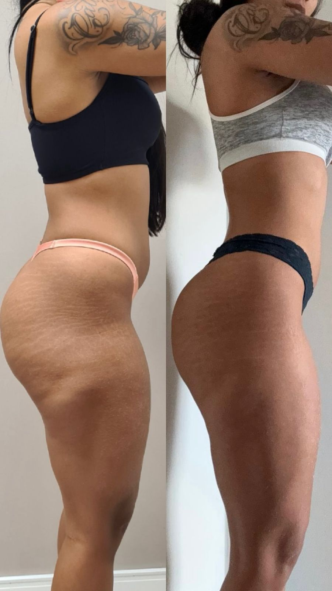
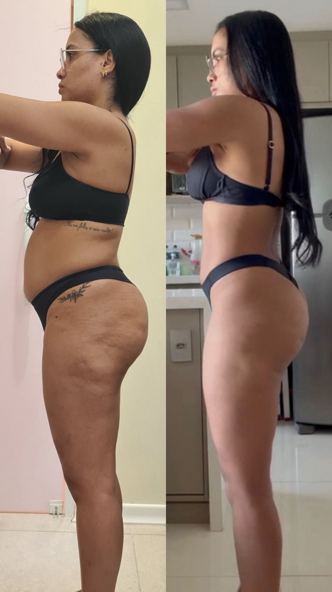
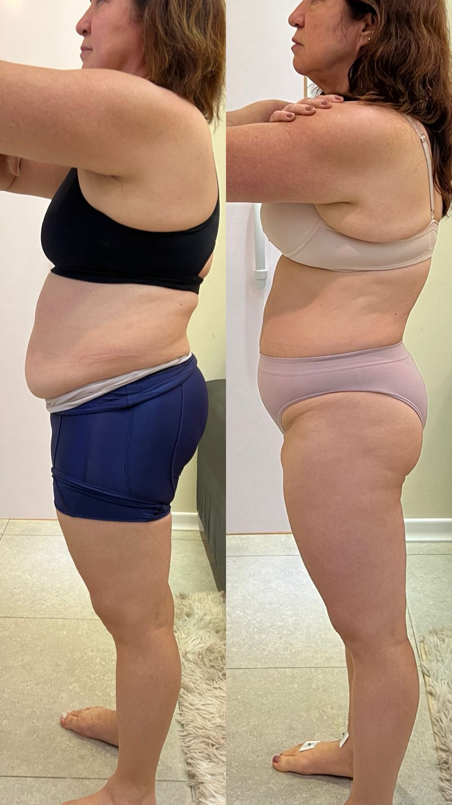
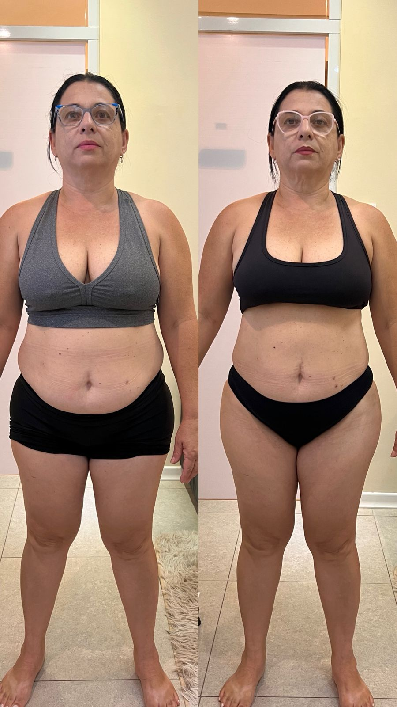
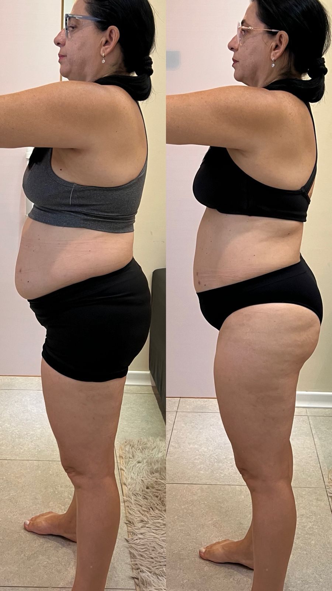
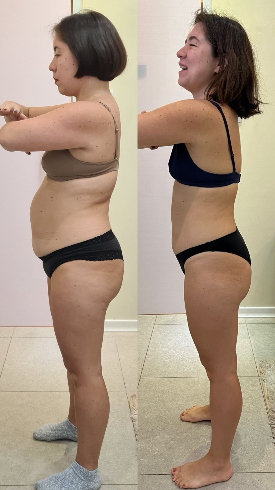
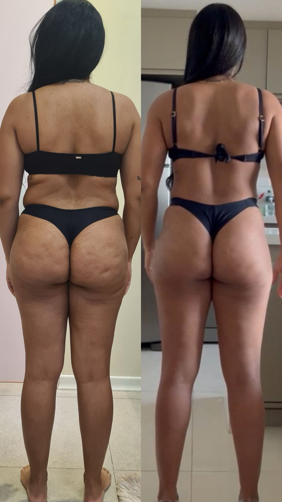
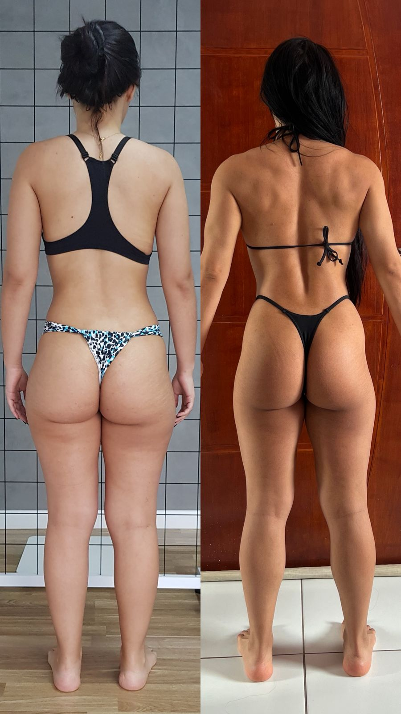
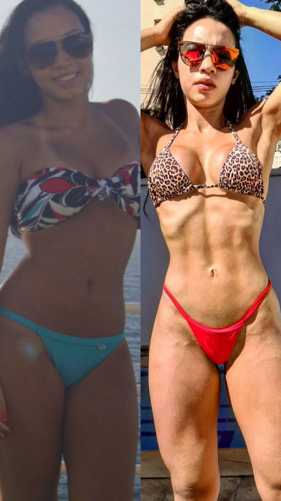
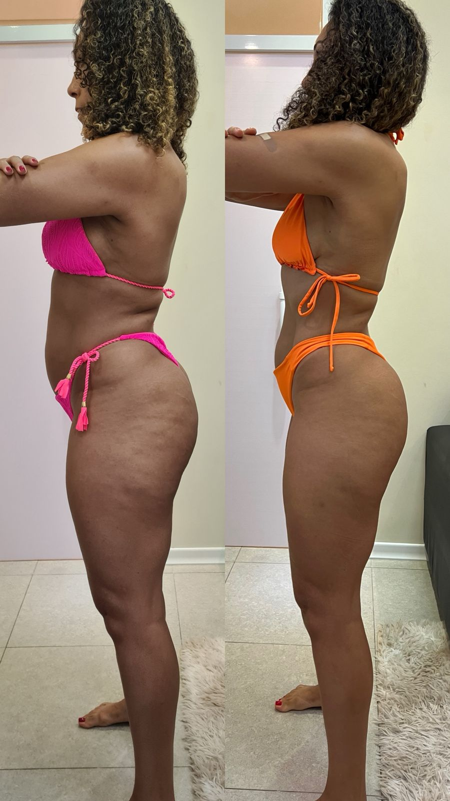
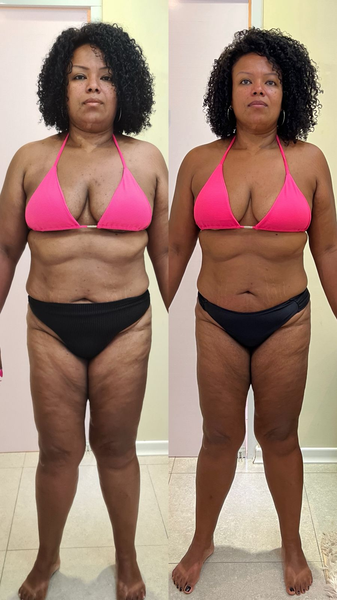
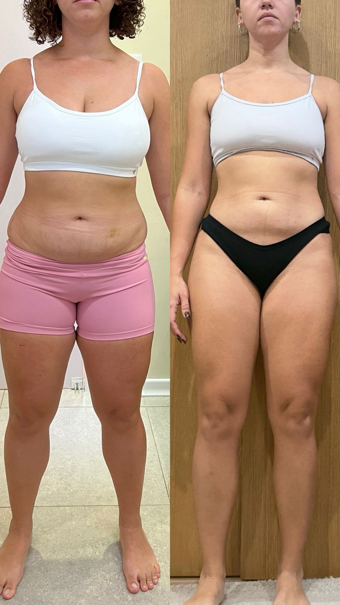
Já tinha tentado de tudo — e tudo funcionava por um mês. Com a Ana foi diferente desde o início: ela montou um plano que cabia na minha vida, sem proibições absurdas. Em 4 meses perdi 11kg e ainda ganhei músculo. Nunca achei que seria possível sem sofrimento.

Informação certa. Resultado certo.
A nutrição esportiva ainda carrega muitos mitos. Gosto de educar meus pacientes porque conhecer a verdade é o primeiro passo para parar de sabotar o próprio resultado.
Carboidrato engorda e deve ser cortado
Carboidrato é o principal combustível para o treino. Cortar sem critério prejudica a performance, o humor e o metabolismo.
Quanto menos comer, mais rápido emagreço
Déficit extremo leva à perda muscular e adaptação metabólica — o corpo aprende a gastar menos e o resultado estagna.
Suplemento é obrigatório para quem treina
Suplemento complementa uma dieta bem estruturada. Sem base alimentar sólida, nenhum suplemento vai gerar resultado.
Perguntas frequentes
Não. Atendo pessoas com todos os perfis e objetivos — desde quem pratica esportes até quem está começando do zero ou busca apenas saúde e bem-estar. Meu protocolo é adaptado para a sua realidade.
Os primeiros resultados — mais energia, menos inchaço e melhora na disposição — costumam aparecer nas primeiras 2 a 3 semanas. Resultados visuais mais expressivos surgem entre 30 e 90 dias, dependendo do objetivo e do comprometimento com o protocolo.
Minha proposta é nunca cortar por cortar. Somente alimentos que prejudicam clinicamente o seu objetivo ou saúde são retirados — e sempre de forma planejada e explicada. O plano é feito para caber na sua vida.
Atendo nas duas modalidades. As consultas online têm o mesmo nível de qualidade e acompanhamento das presenciais, com plataforma segura e suporte pelo WhatsApp entre as sessões.
Não é obrigatório ter exames para a primeira consulta. Se você tiver exames recentes, traga — eles ajudam muito no diagnóstico. Caso necessário, indico os exames complementares durante a avaliação.
Após a consulta, você recebe o plano alimentar detalhado e tem suporte via WhatsApp para dúvidas pontuais. Os retornos são agendados conforme a evolução — geralmente a cada 30 dias nos primeiros meses.
Pronto para conquistar
o seu melhor corpo?
Mais de 5.000 pessoas já transformaram seus corpos comigo. A próxima transformação pode ser a sua.
Agendar pelo WhatsApp